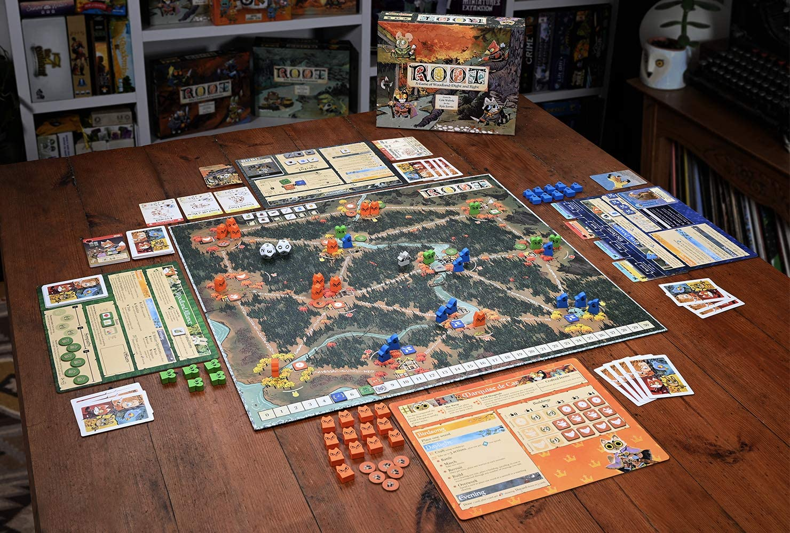
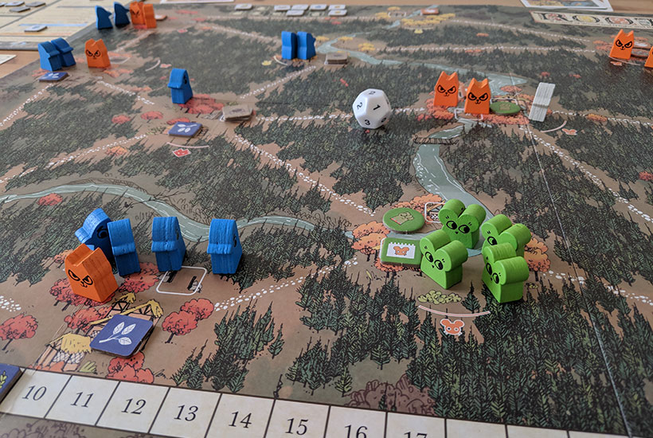
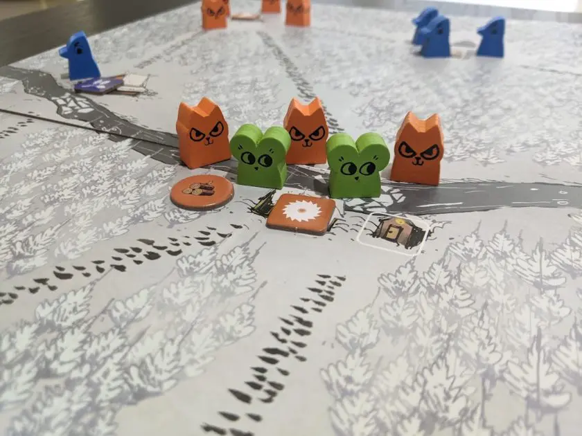

Czym jest Root?
Root to gra wojenna, która wyróżnia się przede wszystkim swoją asymetrycznością, co stanowi jej kluczowy element. Co to oznacza? Każda z dostępnych frakcji w grze ma zupełnie odmienne mechaniki, styl gry oraz strategie, które należy przyjąć, aby odnieść zwycięstwo. Jednak pomimo różnic w mechanikach, cel gry jest zbliżony – każda frakcja dąży do zdobycia przewagi na planszy, realizując swoje zadania i rywalizując o kontrolę nad lasem. Na przykład, Koty Markizy koncentrują się na budowaniu infrastruktury i dominacji terytorialnej, podczas gdy Włóczęga działa samotnie, wykorzystując spryt i dyplomację, aby przetrwać i zdobyć punkty. Dzięki tej asymetrii rozgrywka w Root jest dynamiczna, zróżnicowana i wymaga od graczy elastyczności oraz zrozumienia strategii innych frakcji, by skutecznie konkurować o zwycięstwo.
Dlaczego jest ciekawy?
Przede wszystkim, to właśnie asymetryczność sprawia, że każda frakcja w Root może być odbierana inaczej przez graczy. Dla jednych niektóre frakcje mogą wydawać się bardziej interesujące, ze względu na ich styl gry, mechanikę czy poziom zaawansowania, podczas gdy inni mogą preferować te prostsze lub bardziej przewidywalne. Ostatecznie wszystko zależy od osobistych preferencji – jedni gracze będą czerpać przyjemność z zarządzania dużą armią i budowania struktur, jak w przypadku Kotów Markizy, inni będą woleli bardziej skomplikowaną rozgrywkę opartą na dyplomacji i manipulacji, jak w przypadku Włóczęgi. Różnorodność frakcji i ich kombinacje dodają grze dynamizmu i sprawiają, że każda partia może wyglądać zupełnie inaczej. Czasem dochodzi do sytuacji, w których poszczególne frakcje, ze względu na swoje specyficzne zdolności i mechaniki, tworzą napięcie przy stole. Na przykład, gdy jeden z graczy kontroluje frakcję Szczurów (frakcję Władcy Szczurów), których celem jest przewrót i wprowadzenie chaosu, a inny gracz prowadzi Orły (Dynastię Orlich Gniazd), skoncentrowane na strategicznym planowaniu i ekspansji, wówczas rozgrywka nabiera intensywności. Orły, dążąc do utrzymania swojego ścisłego planu, muszą nieustannie uważać na niespodziewane ataki ze strony Szczurów, które mogą zniszczyć ich misternie zbudowany łańcuch dowodzenia. Każda frakcja ma swoje mocne i słabe strony, a interakcje między nimi mogą prowadzić do ciekawych, czasem nawet nieprzewidywalnych sytuacji. Dlatego, kombinacje frakcji i sposób ich gry wpływają na to, jak intensywna i angażująca będzie rozgrywka, co sprawia, że Root jest tytułem pełnym niespodzianek i strategicznych wyzwań.
Czy polecam początkującym graczom?
Po części tak, ale najlepiej jest mieć pewną podstawową wiedzę na temat tego, jak działają gry planszowe, zanim sięgniemy po bardziej złożone tytuły, takie jak Root. Gry takie jak Catan i Ryzyko są doskonałymi przykładami tytułów, które mogą wprowadzić nowych graczy w świat strategii, interakcji i zarządzania zasobami. Obie te gry są doskonałym fundamentem dla graczy, którzy chcą rozwinąć swoje umiejętności i zrozumienie mechanik planszówek. Posiadanie tej podstawowej wiedzy o zarządzaniu zasobami, planowaniu strategii, a także o współpracy i rywalizacji z innymi graczami sprawi, że przejście do bardziej złożonych i asymetrycznych gier, takich jak Root, będzie znacznie łatwiejsze. Dzięki temu nowi gracze będą lepiej przygotowani do zrozumienia skomplikowanych zależności między frakcjami i bogactwa strategii, które takie tytuły oferują.